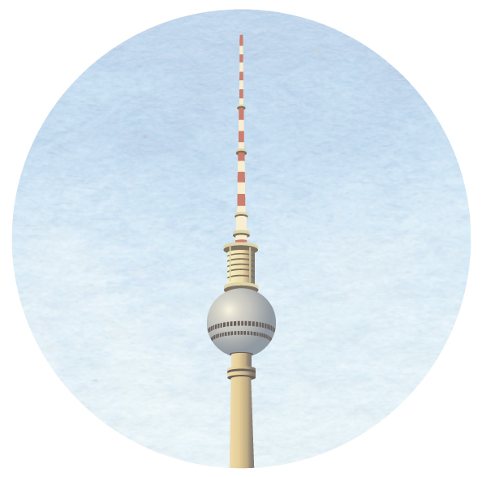
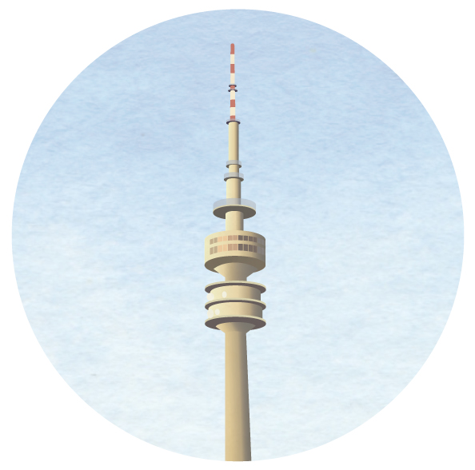
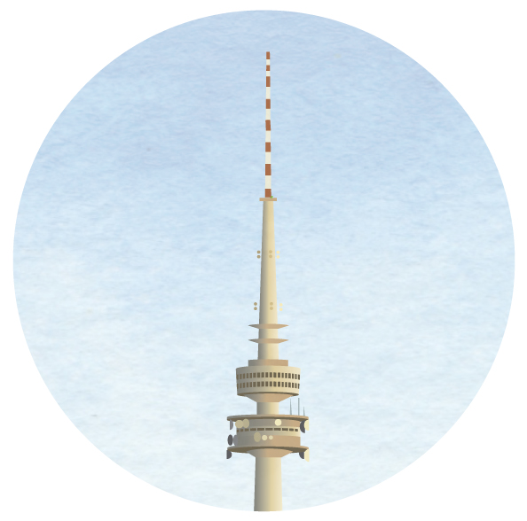
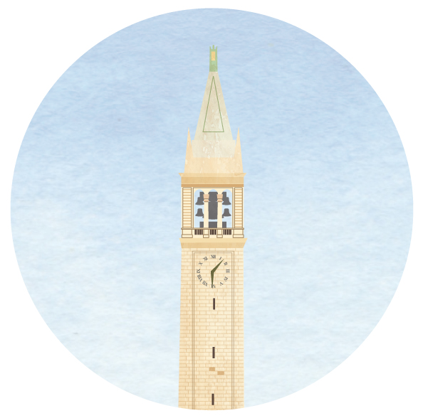

2021–now
Museum für Naturkunde, Berlin
Research scientist · Center for Integrative Biodiversity Discovery
Dr. Joshua V. Peñalba
Education, appointments, and the full record — the homepage has the short version.

Museum für Naturkunde, Berlin
Research scientist · Center for Integrative Biodiversity Discovery

Ludwig-Maximilians-Universität München
Postdoctoral researcher · Division of Evolutionary Biology
PI: Prof. Jochen Wolf

Australian National University & CSIRO
PhD candidate · Research School of Biology
Advisors: Prof. Craig Moritz & Dr. Leo Joseph

University of California, Berkeley
B.A. Integrative Biology (Hons)
Advisor: Prof. Rauri Bowie
Moritz Lab Manager (part-time), Australian National University
Standard molecular lab maintenance — inductions, supply stocking, expenditure management.
Assistant Lab Manager, UC Berkeley — Evolutionary Genetics Lab
Lab maintenance in the absence of the resident manager; training of other researchers.
Independent Contractor: Evolutionary Genetics, UC Berkeley
Collected genetic and genomic data for foreign researchers.
Curatorial Assistant, UC Berkeley — Museum of Vertebrate Zoology
Organized specimens, updated databases, installed specimens (ornithology, herpetology, mammalogy).
Field Assistant, UC Berkeley — Museum of Vertebrate Zoology
Assisted curators and graduate students on field trips for collecting and ecological studies.
Lab Technician, UC Berkeley (Advisor: Dr. Rauri Bowie)
Standard molecular lab techniques for Sanger sequencing and NGS.
Preparation Lab Assistant, UC Berkeley — Museum of Vertebrate Zoology
Prepared ~350 specimens (skeletons, study skins, alcohol) for the collection.
ANU — Demonstrator, Biol1008: Human Biology (2 semesters)
ANU — Demonstrator, Biol3157: Bioinformatics and Functional Genomics
UC Berkeley — Undergraduate Student Instructor, IB173: Ornithology
UC Berkeley — Undergraduate Student Instructor, Advanced Bird Skinning Seminar (4 semesters)
UC Berkeley — Undergraduate Student Instructor, Preparation Lab Seminar (2 semesters)
UC Berkeley — Lab Technician, Evolutionary Genetics Lab Training (~15 students)
Louisiana State University — Systematics, Ecology, and Evolution Seminar Series
Museum für Naturkunde, Berlin
Joint Congress on Evolutionary Biology, Montpellier
Genome divergence and gene flow through the speciation continuum: insights from suture zones of Australian birds. Oral, Hamilton Award Symposium.
Centre for Biodiversity Analysis — Genomics and Collections
De novo whole genome sequencing and assembly of the superb fairywren (poster); Genomic introgression across an Australian bird suture zone.
Gordon Research Conference — Speciation
Divergence-with-gene-flow in birds: genome differentiation in allopatry vs. parapatry through the speciation continuum (poster).
Society for Molecular Biology and Evolution
Genomic divergence in allopatry vs. parapatry through the speciation process (poster).
Australasian Ornithological Council
Divergence in an avian suture zone. Oral presentation.
International Biogeography Conference
Sequence Capture using PCR-generated Probes (SCPP) (poster).
Evolution
Sequence Capture using PCR-generated Probes (SCPP) (poster).
Vice Chancellor's HDR Travel Grant, ANU — $1500 AUD
Registration Reimbursement Award, SMBE — $425 AUD
Spencer Smith-White Travel Grant, Genetics Society of Australasia — $500 AUD
Stuart Leslie Bird Research Award, BirdLife Australia — $5000 AUD
The Hermon Slade Foundation — $58,800 AUD
Joyce W. Vickery Wildlife Fund, Linnean Society of NSW — $800 AUD
University Research Scholarship (International), ANU
$31,600 AUD/yr tuition, $24,653 AUD/yr stipend
Departmental Citation Award, Integrative Biology, UC Berkeley
Summer Undergraduate Research Fellowship, UC Berkeley — $4000 USD
Biodiversity Award, Museum of Vertebrate Zoology, UC Berkeley — $2500 USD (×2)
Biology Fellows Program, UC Berkeley — $2500 USD
EEG HDR Representative — Research Training Committee & Organisational Review Panel, Research School of Biology, ANU (2015–2017)
BirdLife Australia · Genetics Society of Australasia · Phi Beta Kappa · Sigma Xi · Society for Molecular Biology and Evolution · Society for the Study of Evolution · Society of Systematic Biologists
Behavioral Ecology · Biological Journal of the Linnean Society · Bird Conservation International · Emu — Austral Ornithology · Evolution · Journal of Biogeography · Journal of Evolutionary Biology · Molecular Ecology · Molecular Ecology Resources · Molecular Phylogenetics and Evolution · Philosophical Transactions of the Royal Society B · PLOS One · Proceedings of the Royal Society B · Scientific Reports
CoLab: Science Meets Street Art (art by Smalls)